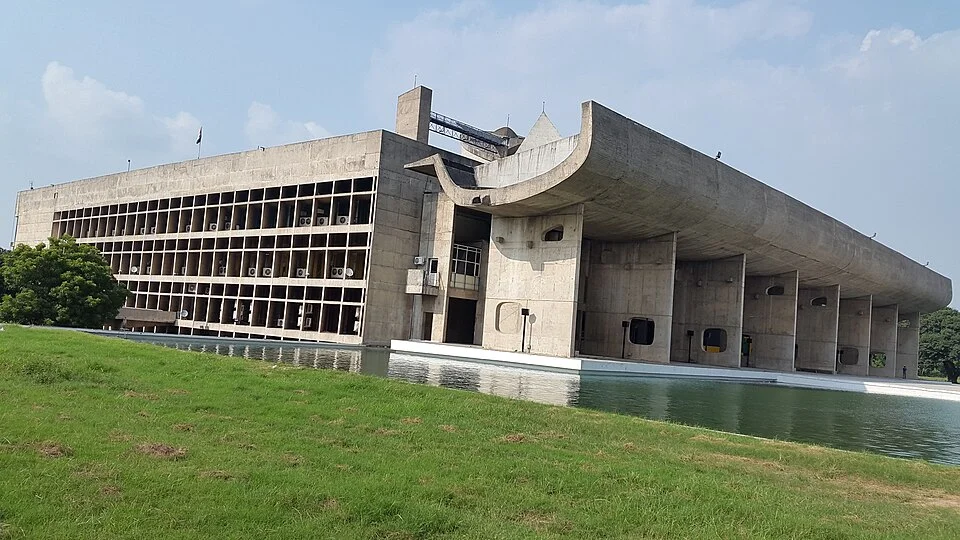
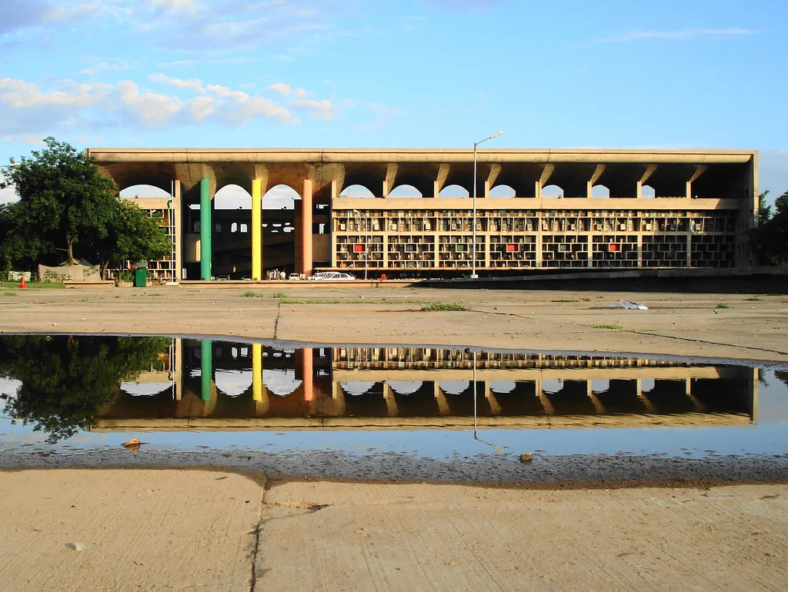
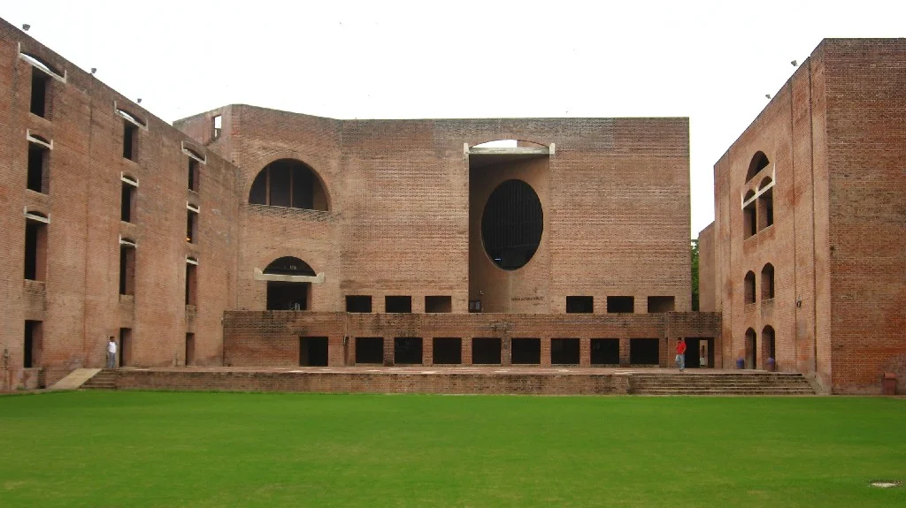

見どころ
正面に大きな庇を張り出し、入口の奥に日陰をつくっています。儀礼のための大きな広場と、日射を和らげる工夫を同時に見ることができます。
作品・制作の例7件を紹介しています。実作品画像4点、参照・関連画像0点。画像の収集は継続中です。
建築をめぐる動向
Tropical Modernism
強い日差しを遮りながら、風を建物へ通すには？ トロピカル・モダニズムは、暑い地域の環境に応えようとした近代建築の動きです。窓の前のひさしや格子には、見た目だけでなく、光と風を調整する役割があります。
実作品を見る

画像を表示できませんでした。下の出典ページで確認できます。
ル・コルビュジエ / 1951–1963年
正面に大きな庇を張り出し、入口の奥に日陰をつくっています。儀礼のための大きな広場と、日射を和らげる工夫を同時に見ることができます。
Lillottama / Wikimedia Commons / CC BY-SA 4.0（WebP変換）
出典で作品・資料を見る ↗CC BY-SA 4.0
インド著作権法第52条第1項(s)・(t)。現地の建物または公共の場所に常設された彫刻の写真。
出典先の原画像を開く ↗作品の所蔵・権利情報 ↗画像の利用条件 ↗図版全体を保ち、表示用のWebP画像を作成。
実作品を見る

画像を表示できませんでした。下の出典ページで確認できます。
ル・コルビュジエ / 1952–1955年
建物全体を覆う大屋根、その下に続く深い格子。暑い季節に日差しを遮る部材が、裁判所の正面をつくっています。
gb pandey from chandigarh, India / Wikimedia Commons / CC BY-SA 2.0（WebP変換）
出典で作品・資料を見る ↗CC BY-SA 2.0
インド著作権法第52条第1項(s)・(t)。現地の建物または公共の場所に常設された彫刻の写真。
出典先の原画像を開く ↗作品の所蔵・権利情報 ↗画像の利用条件 ↗図版全体を保ち、表示用のWebP画像を作成。
実作品を見る

画像を表示できませんでした。下の出典ページで確認できます。
ルイス・カーンと設計チーム / 1960年代以降
厚いれんが壁に円とアーチの開口を切り取り、中庭を囲みました。壁の奥の濃い影を見ると、通路や室内に届く光を建物がどう変えるかが分かります。
Students of IIMA / Wikimedia Commons / CC BY 3.0（WebP変換）
出典で作品・資料を見る ↗CC BY 3.0
インド著作権法第52条第1項(s)・(t)。現地の建物または公共の場所に常設された彫刻の写真。
出典先の原画像を開く ↗作品の所蔵・権利情報 ↗画像の利用条件 ↗図版全体を保ち、表示用のWebP画像を作成。
実作品を見る
画像を表示できませんでした。下の出典ページで確認できます。
マラヤン・アーキテクツ・コーパートナーシップ（ウィリアム・リム、チャン・ブーンフィー、リム・チョンキート） / 1961–1965年
熱帯の暑さの中で大勢が集まれるよう、設計には自然換気が組み込まれました。道路から見ると、奥まった窓の前に庇が長く延びています。
ZKang123 / Wikimedia Commons / CC BY-SA 4.0（WebP変換）
出典で作品・資料を見る ↗学校建築・ガーナ
日差しを遮る部材を使った学校建築です。勉強する場所の光と暑さに、形で応えようとした例です。
作品・資料の出典を見る ↗作品名（出典表記）：ウェズリー女子校（Wesley Girls’ School）
フライ、ドリュー・アンド・パートナーズ / 1947年 / 学校建築・ガーナ
この作品一つで、すべての活動を代表するわけではありません。
大学建築・クマシ
ルーバーなどで日差しを調整した校舎です。独立前後の教育施設と、建築の工夫を一緒に見ます。
作品・資料の出典を見る ↗作品名（出典表記）：クワメ・ンクルマ科学技術大学工学部（School of Engineering, KNUST）
ジェームズ・キュービット・アンド・パートナーズ / 1956年 / 大学建築・クマシ
この作品一つで、すべての活動を代表するわけではありません。
住宅・アクラ
縦のルーバーを使った住宅です。公共の学校と個人の住宅で、光を調整する方法を比べます。
作品・資料の出典を見る ↗作品名（出典表記）：スコット邸（Scott House）
ケネス・スコット / 1961年 / 住宅・アクラ
この作品一つで、すべての活動を代表するわけではありません。
議事堂・インド
正面に大きな庇を張り出し、入口の奥に日陰をつくっています。儀礼のための大きな広場と、日射を和らげる工夫を同時に見ることができます。
作品・資料の出典を見る ↗原題：Palace of Assembly
ル・コルビュジエ / 1951–1963年 / 議事堂・インド
裁判所・インド
建物全体を覆う大屋根、その下に続く深い格子。暑い季節に日差しを遮る部材が、裁判所の正面をつくっています。
作品・資料の出典を見る ↗原題：High Court, Chandigarh
ル・コルビュジエ / 1952–1955年 / 裁判所・インド
教育施設・インド
厚いれんが壁に円とアーチの開口を切り取り、中庭を囲みました。壁の奥の濃い影を見ると、通路や室内に届く光を建物がどう変えるかが分かります。
作品・資料の出典を見る ↗原題：Indian Institute of Management Ahmedabad, Heritage Campus
ルイス・カーンと設計チーム / 1960年代以降 / 教育施設・インド
集会施設・シンガポール
熱帯の暑さの中で大勢が集まれるよう、設計には自然換気が組み込まれました。道路から見ると、奥まった窓の前に庇が長く延びています。
作品・資料の出典を見る ↗原題：Singapore Conference Hall and Trade Union House
マラヤン・アーキテクツ・コーパートナーシップ（ウィリアム・リム、チャン・ブーンフィー、リム・チョンキート） / 1961–1965年 / 集会施設・シンガポール
植民地支配の下で進められた建築もあり、独立後には新しい国をつくる計画にも使われました。そのため、気候に合う工夫だけでなく、誰が計画し、誰が使ったかも重要です。地域の昔からの建て方が、十分に尊重されたとは限りません。
外壁の白さだけで見分けません。太陽の位置で変わる影が、建物の表情と室内環境をつくります。
建築の動向なので、共通の書体はありません。学校名や案内表示は、建物とは別に確かめます。
ブリーズ・ソレイユとは、日差しを遮るひさしや格子のことです。ルーバーは、細長い板を間隔をあけて並べた仕組みです。
建物の向き、窓の位置、風の通り道を一緒に見ます。写真に写らない室内の暑さまで、外観だけで決めつけません。
ヤシの木がある近代建築を、すべてこう呼ぶわけではありません。また熱帯にも異なる気候があり、一つの建て方がどの場所でも役立つとは限りません。
涼しさを機械だけに頼らず、建物の形で助けられるでしょうか。昔の工夫をいま使うときも、その土地の気候や使う人に合うか確かめることが大切です。
日差しや雨、風に応じた建築を、現地の写真と作品の記録から読みます。
作品・制作の例7件を紹介しています。実作品画像4点、参照・関連画像0点。画像の収集は継続中です。